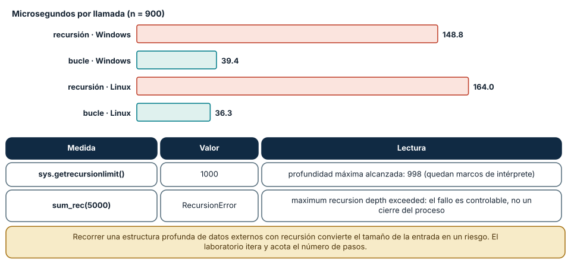
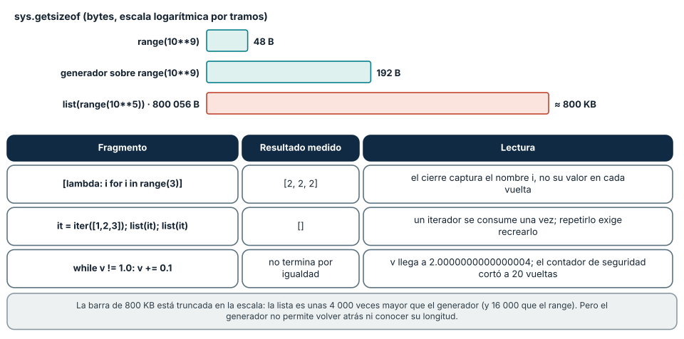

← SE-062 — Control de flujo y decisiones · ↑ Parte 05 · 📚 Índice completo · 🌐 Portal · SE-064 — Funciones, parámetros, retorno y alcance →
Punto profesional y fundamento pedagógico
Punto profesional. La clase existe para elegir iteración, recursión o recorrido manteniendo una invariante explícita.
Por qué aparece aquí. Se sitúa después de Control de flujo y decisiones y antes de Funciones, parámetros, retorno y alcance: convierte el conocimiento anterior en una decisión observable que la clase siguiente podrá reutilizar. La continuidad se comprueba en el artefacto, no por compartir vocabulario.
Error conceptual que debe corregir. Reescribir un bucle como recursión sin medida de progreso.
Secuencia de aprendizaje. Antes de leer la solución, el estudiante predice el resultado del caso normal y del error conceptual anterior. Luego explica un caso resuelto paso a paso, construye un contraejemplo que cambie la decisión y, sin consultar el texto, reconstruye el mecanismo y lo aplica a una entrada nueva. La secuencia usa predicción, explicación propia, contraste y recuperación. ICAP distingue participación de construcción de conocimiento; How People Learn II exige conectar conocimiento previo, contexto y transferencia; la práctica de recuperación respalda producir de nuevo la explicación tras una demora; y Education for Life and Work exige devolución que explique la causa del error.
Evidencia de aprendizaje. Traversal.md con invariante, traza, caso vacío y comparación de pila. Debe contener predicción previa, observación, explicación causal, contraejemplo, criterio de aceptación y una nota de qué dato haría cambiar la conclusión.
Límite de la conclusión. Equivalencia de resultado no implica igual consumo de recursos.
Trazabilidad fuente → afirmación
| Fuente primaria u oficial | Afirmación que respalda | Lo que no prueba |
|---|---|---|
| Python Tutorial | define la semántica y los límites de la API de Python utilizada en el experimento | No demuestra por sí sola que el artefacto del estudiante sea correcto. |
| Python Language Reference | define la semántica y los límites de la API de Python utilizada en el experimento | No demuestra por sí sola que el artefacto del estudiante sea correcto. |
| Python Tutorial — Data Structures | define la semántica y los límites de la API de Python utilizada en el experimento | No demuestra por sí sola que el artefacto del estudiante sea correcto. |
Antes de empezar
Esta clase construye la CLI diagnóstica, implementación incremental de la especificación del modelo de decisión diagnóstica. Recupera SE-062 y convierte una regla ya modelada en comportamiento ejecutable o comprobable. Trabaja en cambios pequeños: predicción, código, ejecución, evidencia y explicación. Ejecutar sin poder explicar el resultado no completa la práctica.
Prerrequisitos
- Python 3.11 o posterior disponible como
pythonopython3; registra la versión real. - Terminal, editor de texto y Git; no se requieren paquetes externos.
- Comprender el contrato del modelo de decisión diagnóstica: entradas, resultados, errores e invariantes.
Problema auténtico
La CLI diagnóstica debe recorrer observaciones, dependencias anidadas y eventos hasta hallar la primera divergencia. Un bucle puede saltar elementos al modificar la lista; una recursión puede repetir nodos ante ciclos. El recorrido necesita invariante, progreso y límites.
Objetivos observables
Al terminar podrás explicar el mecanismo del lenguaje, predecir una ejecución, implementar un caso normal y sus fronteras, diagnosticar un fallo controlado, proteger el comportamiento con evidencia y separar lo transferible de lo específico de Python.
Mapa conceptual
Ver la notación fuente del diagrama
flowchart LR
S[Especificación el modelo de decisión diagnóstica] --> V[Valores y contratos]
V --> C[Control y transformación]
C --> E[Efectos en la frontera]
E --> O[Salida observable]
O --> T[Prueba y diagnóstico]
T -->|defecto o caso nuevo| SEl código no reemplaza la especificación: la materializa bajo reglas concretas del lenguaje y del entorno. La pregunta de esta clase es: ¿Qué progresa en cada paso y qué condición garantiza que el recorrido termina?
Temas y por qué importan
| Lente | Pregunta | Evidencia |
|---|---|---|
| valor | ¿qué representa y qué tipo tiene? | ejemplo inspeccionable |
| control | ¿qué camino o repetición ocurre? | traza de estados |
| contrato | ¿qué acepta, retorna y rechaza? | casos frontera |
| efecto | ¿qué cambia fuera del cálculo? | archivo o stream controlado |
| mantenimiento | ¿cómo se detecta una regresión? | prueba y diff enfocado |
Conceptos y decisiones
1. Iteración definida e indefinida
for recorre un iterable; while repite mientras una condición sea verdadera. for comunica mejor un dominio finito conocido. while requiere una variable de progreso visible; depender de un evento externo exige deadline o cancelación.
2. Invariante de bucle
Antes de cada iteración se conserva una propiedad. En búsqueda de primera falla: todos los elementos anteriores fueron sanos y index apunta al siguiente no clasificado. El invariante explica por qué detenerse produce la respuesta correcta.
3. break, continue y else
break termina el bucle más cercano; continue salta a la siguiente vuelta. Un else de bucle se ejecuta si no hubo break, útil para expresar «no encontrado», pero puede sorprender. Se usa solo con una lectura clara y pruebas.
4. Recursión y pila
La recursión resuelve una estructura mediante subestructuras y caso base. Python no optimiza tail calls y limita profundidad; árboles profundos necesitan pila explícita. Para grafos, visited impide ciclos y repetición.
5. Modificar mientras se recorre
Eliminar elementos de la lista iterada desplaza índices y omite datos. Se construye una nueva colección, se itera sobre copia o se filtra declarativamente. La estrategia depende de memoria, identidad y necesidad de conservar orden.
Recursión y pila: lo que cuesta y cuándo falla
Sumar los enteros de 1 a 900 con una función recursiva y con un bucle da el mismo resultado (405 450), pero el costo es distinto: 148.8 µs con recursión y 39.4 µs con bucle en Windows (164.0 y 36.3 µs en Linux). Cada llamada recursiva crea un marco en la pila de llamadas, y CPython limita su profundidad: sys.getrecursionlimit() devolvió 1000 y una prueba que descendió hasta el error alcanzó una profundidad de 998 marcos. sum_rec(5000) lanza RecursionError: maximum recursion depth exceeded.
Que sea una excepción y no un cierre abrupto del proceso es una propiedad útil: el fallo es capturable y diagnosticable. Pero también muestra el riesgo de recorrer datos externos con recursión: si la estructura la controla otra persona, la profundidad es una entrada. Un JSON con 100 000 corchetes anidados produce RecursionError en json.loads (medido en SE-067). El laboratorio evita el problema de dos formas: recorre las observaciones con un bucle sobre un iterador de líneas y limita el número de pasos (max_steps = len(spec.probes)), de modo que ningún dato de entrada crea un recorrido ilimitado.
La recursión sigue siendo la forma natural de recorrer estructuras recursivas (árboles, expresiones). La decisión profesional es acotar su profundidad (límite explícito o conversión a iteración con pila propia) en lugar de confiar en que los datos «no serán tan grandes». Python no hace optimización de llamada de cola, así que una recursión de cola no ahorra marcos.

Cómo leer la figura. Las barras rojas son recursión y las verdes bucle, en microsegundos por llamada; la tabla inferior registra el límite del intérprete y el error observado al superarlo. Dónde deja de valer: el límite 1000 es configurable (sys.setrecursionlimit) pero subirlo solo desplaza el fallo hasta agotar la pila del sistema. Otros lenguajes (Scheme, Erlang) eliminan las llamadas de cola; Python no.
Invariantes y la trampa de modificar mientras se recorre
Un bucle es correcto si mantiene un invariante: una afirmación verdadera antes de cada vuelta, que al terminar el bucle implica el resultado. Para el filtrado, el invariante podría ser «los elementos ya vistos están decididos y los aceptados están en el resultado». Modificar la colección que se recorre rompe ese invariante porque el iterador conserva un índice y la colección cambia debajo.
El experimento lo muestra con una trampa bien escondida. Quitar los pares de [1, 2, 3, 4, 5, 6] mientras se itera dio [1, 3, 5], correcto. Pero con [2, 4, 6, 8] el resultado fue [4, 8]: al borrar el elemento del índice 0 la lista se desplaza, el iterador avanza al índice 1 y salta el 4. El primer caso «funcionó» porque los elementos saltados eran impares. Una prueba con una sola entrada habría aprobado un defecto. Con un diccionario el lenguaje avisa: añadir una clave durante el recorrido lanza RuntimeError: dictionary changed size during iteration.
La alternativa es construir un resultado nuevo: la comprensión [v for v in xs if v % 2] dio el resultado correcto en ambos casos. Las reglas que siguen son: no modificar una colección mientras se itera sobre ella; iterar sobre una copia si hace falta mutar; y preferir construir una colección nueva. En el laboratorio, apply_observation devuelve un State nuevo y no toca el anterior, de modo que el bucle de run_diagnosis no tiene este riesgo.
![Figura 2. Tabla con cuatro experimentos: quitar pares de [1..6], de [2,4,6,8], añadir una clave a un diccionario durante el recorrido y filtrar con una comprensión](../../../content/part-05/figures/se-063-mutar-mientras-se-recorre.svg)
Cómo leer la figura. La segunda fila es la importante: el mismo código que funcionó con la primera entrada falla con la segunda. La cuarta muestra el patrón que evita ambos problemas. Dónde deja de valer: el comportamiento exacto (saltar elementos) es el de la lista de CPython; en otras estructuras o lenguajes puede ser un error, un salto distinto o comportamiento indefinido. Nunca debe usarse como técnica.
Iteradores, for…else, cierres y memoria
Un iterador produce los valores de uno en uno. La diferencia en memoria es medible: range(109) ocupa 48 bytes, una expresión generadora sobre ese rango 192 bytes y list(range(105)) ocupa 800 056 bytes. Por eso el laboratorio lee las observaciones línea a línea con un generador (iter_json_lines): el consumo de memoria no depende del tamaño del archivo, salvo el límite de 1 MB que se impone para acotar el tiempo.
Un iterador se agota: it = iter([1, 2, 3]); list(it) y luego list(it) devuelve []. Quien necesita recorrer dos veces debe recrearlo o materializar la colección. for…else expresa la búsqueda: el else se ejecuta solo si el bucle terminó sin break; find([3, 4], 4) devolvió 1 y find([3, 4], 9) devolvió -1. Y una variable de bucle sobrevive al bucle (i valía 2 al terminar for i in range(3)), pero si el bucle no itera, el nombre nunca existió y leerlo lanza NameError.
Dos trampas más. Los cierres capturan el nombre, no el valor: [lambda: i for i in range(3)] devuelve [2, 2, 2] cuando se llama a las tres funciones. Y los bucles con float no deben terminar por igualdad: while v != 1.0: v += 0.1 nunca vale exactamente 1.0 (tras diez sumas da 0.9999999999999999) y sigue hasta 2.0000000000000004 sin detenerse; el contador de seguridad cortó a las 20 vueltas. La condición de término correcta es una desigualdad (<) o un contador entero.

Cómo leer la figura. Las barras muestran memoria; la barra de la lista está truncada para caber. La tabla inferior reúne tres trampas con su resultado medido. Dónde deja de valer: sys.getsizeof mide el objeto contenedor, no los objetos a los que apunta; los tamaños son de CPython 3.12 de 64 bits. Los generadores ahorran memoria pero impiden volver atrás o conocer la longitud.
Definiciones de trabajo
- iterable: objeto que produce elementos secuencialmente.
- invariante de bucle: propiedad cierta antes y después de cada vuelta.
- progreso: cambio que acerca a la terminación.
- caso base: entrada resuelta sin nueva recursión.
- visited: conjunto de identidades ya procesadas.
Estas definiciones describen el uso concreto en la CLI diagnóstica. Cuando Python permita varias conductas, el contrato del programa elige una y la hace visible con validación y pruebas.
Ejemplo mínimo
first_failure = None
for observation in observations:
if observation["outcome"] == "ok":
continue
first_failure = observation
break
if first_failure is None:
print("healthy")Traza un bucle sobre [ok, ok, tls_error, http_error]. Escribe el invariante antes de cada vuelta y explica por qué detenerse en TLS devuelve la primera divergencia.
Ejecuta el fragmento en un archivo, no solo en una conversación interactiva. Conserva comando, versión, salida y explicación de cada línea relevante.
Ejemplo profesional
La CLI diagnóstica recorre un grafo con pila explícita y visited. Cada extracción consume un nodo y cada nodo se añade una vez. Un límite de nodos produce INCOMPLETE con cursor; no finge resultado completo.
El criterio profesional es que el comportamiento pueda ser consumido, diagnosticado y cambiado sin depender de conocimiento oral ni de estado oculto.
Práctica guiada
- elige
forowhiley justifica. - declara invariante y medida de progreso.
- traza índices y resultado.
- reproduce el defecto de borrar durante recorrido.
- convierte una recursión de árbol a pila.
- ejecuta
python -m unittest -vcuando existan pruebas y registra el resultado exacto.
Ejercicios
- Invariante: escribe el invariante de un bucle que suma los costos de las pruebas usadas y comprueba que se mantiene en cada vuelta con un
asserttemporal. - Depuración: predice la salida de
for v in xs: if v % 2 == 0: xs.remove(v)con[1, 2, 2, 3, 4]y explica cada salto del iterador. - Recursión a pila: reescribe
sum_reccomo bucle y como recursión con límite explícito de profundidad; mide ambos contimeit. - Memoria: mide con
sys.getsizeofuna lista y un generador de 10**6 elementos y explica por qué el lector JSONL del laboratorio usa el segundo.
Reto verificable
Entrega un cambio que incluya comportamiento, caso normal, caso límite, fallo controlado y explicación. Otra persona debe poder ejecutar los comandos desde un checkout limpio y relacionar cada salida con una regla del modelo de decisión diagnóstica.
Demostración guiada
- Escribe la entrada y la salida esperada antes del código.
- Ejecuta el caso mínimo y observa valores intermedios sin dejar prints permanentes en el núcleo.
- Añade el caso frontera que obligue a decidir, no solo a teclear.
- Introduce el fallo descrito abajo y confirma que la evidencia lo detecta.
- Corrige, ejecuta toda la suite y revisa el diff por efectos no deseados.
Preguntas frecuentes
¿Recursión o bucle?
Recursión para estructuras recursivas con profundidad acotada; bucle para recorridos lineales y para datos externos. Si la profundidad depende de la entrada, itera con una pila explícita.
¿Se puede subir el límite de recursión?
Sí con sys.setrecursionlimit, pero solo traslada el fallo al agotamiento de la pila del sistema y puede cerrar el proceso. Es un parche, no una solución.
¿break, continue y else en bucles son mala práctica?
No, usados con claridad. for…else es la forma idiomática de «buscar y, si no se encuentra, actuar». Lo dudoso es anidarlos hasta ocultar el invariante.
¿Por qué no while True en la CLI?
Porque no tiene cota. El laboratorio cuenta los pasos y los limita (too_many_observations), de modo que ningún archivo de entrada produce un bucle infinito.
Fallo controlado y diagnóstico
Crea la lista [2, 4, 6, 8] y elimina los pares mientras la recorres con for. Predice el resultado, ejecútalo y observa [4, 8]. Escribe un caso de prueba con esa entrada y comprueba que falla con la implementación defectuosa. Corrige con una comprensión o con una copia (for v in list(xs):) y confirma que el resultado es []. Después repite con un diccionario y registra el RuntimeError. La evidencia es el par entrada/salida que revela el defecto, no la entrada que lo esconde.
Errores comunes y cómo corregirlos
| Síntoma | Causa | Corrección |
|---|---|---|
| el resultado cambia según los datos, sin error | se elimina de la lista que se recorre | construir una lista nueva o iterar sobre una copia |
RuntimeError: dictionary changed size | se añaden o quitan claves durante el recorrido | recorrer list(d) o construir un diccionario nuevo |
RecursionError con una entrada grande | recursión con profundidad igual al tamaño del dato | iterar con pila explícita o limitar la profundidad |
| todas las funciones creadas en el bucle devuelven lo mismo | enlace tardío del nombre en el cierre | capturar el valor como argumento por defecto o con functools.partial |
| el bucle con floats no termina o se pasa | comparación de igualdad con aproximaciones binarias | contador entero o condición < |
Entorno y archivos clave
work/SE-063/
├── diagnostic_cli/
│ ├── __init__.py
│ ├── domain.py
│ ├── cli.py
│ └── __main__.py
├── tests/
│ └── test_diagnostic_cli.py
└── README.mdNo instales dependencias para resolver lo que cubre la biblioteca estándar. README.md conserva versión, comandos, entradas, salida, limpieza y límites. Los fragmentos son pedagógicos; intégralos solo después de entender su contrato.
Laboratorio integrado de la Parte 05
Recorre el stream JSONL de labs/part-05-diagnostic-cli y documenta tres medidas de progreso: número de línea consumido, pruebas no repetidas y límite len(spec.probes). Inyecta una observación adicional y una línea malformada; verifica terminación y localización del fallo. Compara el iterador con una carga completa en memoria y justifica la elección sin afirmar que JSONL vuelve ilimitada la entrada: el límite de 1 MB sigue siendo parte del contrato.
Seguridad, ética y accesibilidad
- usa fixtures sintéticos y no incluyas tokens, rutas personales ni incidentes reales;
- limita tamaño, profundidad y tiempo de entradas no confiables;
- separa stdout parseable de stderr y redacta datos sensibles;
- ofrece mensajes accionables y no dependas solo de color;
- preserva autorización como regla del núcleo, no como checkbox de UI;
- no uses
eval,execni construcción de shell con entrada externa.
Puente hacia el trabajo con agentes
Un agente es, en esencia, un bucle: observa, decide, actúa y repite. Todo lo que esta clase dice sobre bucles se aplica con más fuerza: sin una cota explícita (número de pasos, presupuesto, tiempo), un bucle de agente puede repetirse indefinidamente, gastando dinero o tocando sistemas. El laboratorio ya muestra el patrón correcto: contar pasos, limitar el máximo al tamaño del problema y devolver un rechazo explícito al superarlo. Dos controles se derivan: toda iteración de un agente tiene un límite de pasos y de tiempo configurado fuera del propio agente, y el estado que cambia entre vueltas se pasa y se devuelve como valor, no se modifica en su sitio, para que una vuelta fallida no deje la siguiente con datos corruptos.
Transferencia
Reimplementa el contrato, no la sintaxis. Identifica cómo el segundo lenguaje representa ausencia, error, mutabilidad y módulos. Conserva fixtures y resultados públicos para detectar una diferencia semántica.
Evaluación y evidencia
| Criterio | Evidencia para aprobar |
|---|---|
| comprensión | predicción y explicación de ejecución |
| comportamiento | normal, límite e inválido según contrato |
| diseño | cálculo separado de efectos y dependencias visibles |
| diagnóstico | fallo mínimo, causa y regresión |
| reproducibilidad | versión, comandos y salidas desde checkout limpio |
Fuentes
- Python Tutorial — define la semántica y los límites de la API de Python utilizada en el experimento.
- Python Language Reference — define la semántica y los límites de la API de Python utilizada en el experimento.
- Python Tutorial — Data Structures — define la semántica y los límites de la API de Python utilizada en el experimento.
- Python Tutorial — Control Flow:
for,range,break,continueyelseen bucles. - Compound statements — for, while: semántica del recorrido y de la cláusula
else. - sys — recursion limit:
getrecursionlimitysetrecursionlimit. - Built-in Types — Iterator Types: protocolo de iteración y agotamiento de iteradores.
- itertools: herramientas de iteración perezosa.
La documentación oficial define el lenguaje y la biblioteca; no demuestra que la CLI diagnóstica cumpla su dominio. Esa evidencia vive en contratos, pruebas y ejecución reproducible.
Límites y siguiente paso
Un recorrido correcto puede ser demasiado costoso y Python impone límites de recursos. La siguiente clase encapsula decisiones mediante funciones y contratos.
Lo que no se midió. No se midió el límite de recursión de otros intérpretes ni el agotamiento real de la pila del sistema; el experimento de modificar durante el recorrido solo cubre listas y diccionarios de CPython.
Glosario
- iterable: objeto que produce elementos secuencialmente.
- invariante de bucle: propiedad cierta antes y después de cada vuelta.
- progreso: cambio que acerca a la terminación.
- caso base: entrada resuelta sin nueva recursión.
- visited: conjunto de identidades ya procesadas.
← SE-062 — Control de flujo y decisiones · ↑ Parte 05 · 📚 Índice completo · 🌐 Portal · SE-064 — Funciones, parámetros, retorno y alcance →